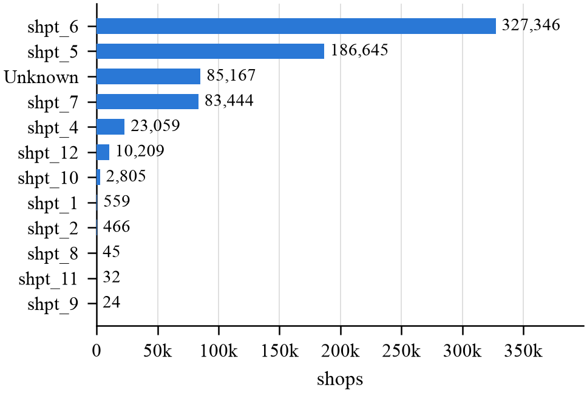
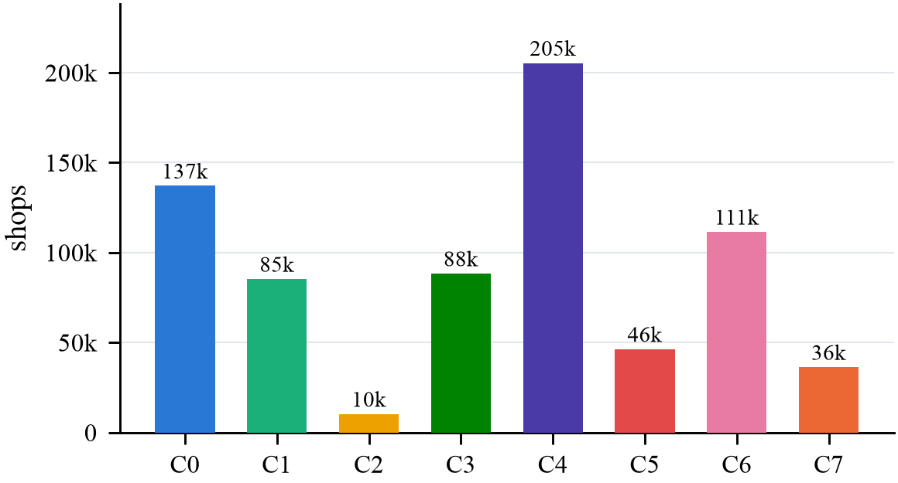
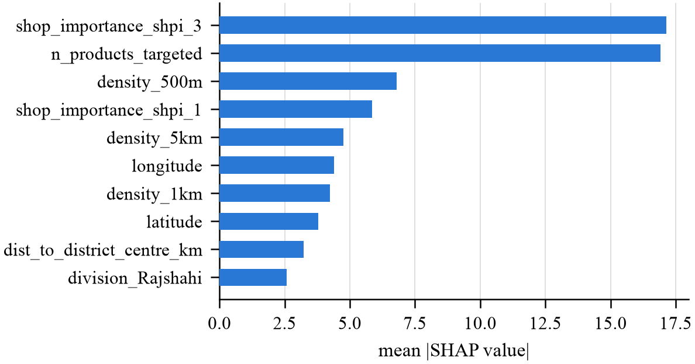
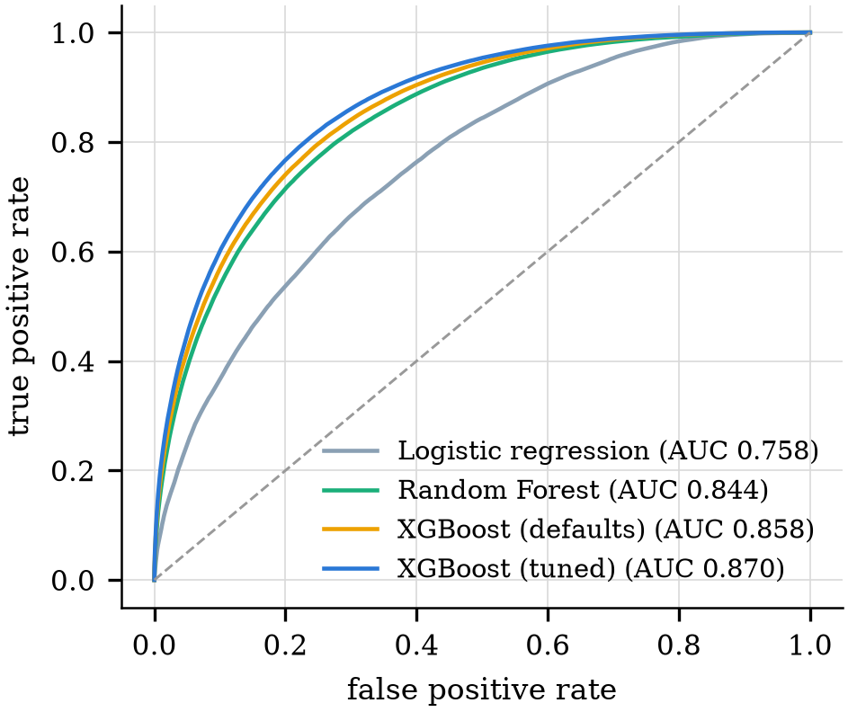

Abstract—Bangladesh’s fast-moving consumer goods (FMCG) distribution network spans roughly 720,000 retail outlets across all 64 districts, yet allocation planning is still largely done on intuition; industry estimates place the resulting waste at 15–25% of distribution capacity. We apply an integrated supervised, unsupervised, and clustering approach to the recently released Comprehensive Retail Network Dataset of Bangladesh (719,817 GPS-tagged outlets, a 42-SKU catalogue, and monthly sales targets for 17 products). Data preparation runs in two cross-validating lanes: a scikit-learn reference and a distributed lane on Hadoop HDFS and Apache Spark with a division-partitioned warehouse, whose row counts reproduce the reference exactly. We engineer 48 spatial and structural features per shop; discover 8 interpretable shop archetypes with K-Means, cross-checked with hierarchical clustering and DBSCAN; benchmark four regression models for sales-target prediction (best test R² 0.45 against a linear baseline of 0.02); train a target-miss risk classifier reaching ROC-AUC 0.869 on the held-out split and 0.870 out-of-fold; and rank 71,982 anomalous shops for fraud and data-error triage with per-cluster Isolation Forest and Local Outlier Factor. Hyperparameters of the winning models are selected by Bayesian optimization (Optuna TPE) and every algorithm is additionally evaluated under 5-fold cross-validation. Beyond the models, the analysis surfaces a finding of direct business value: 85,167 book entries with no recorded attributes form their own “ghost-shop” archetype — a machine-generated audit list for the duplicate and fraudulent entries that motivated the study.
Index Terms—retail analytics, clustering, XGBoost, SHAP, SMOTE, anomaly detection, Bayesian optimization, Hadoop, Apache Spark, Bangladesh
1. Introduction
Fast-moving consumer goods reach Bangladeshi consumers through one of the densest retail networks in the world: small shops, kiosks, and wholesalers distributed across 8 administrative divisions, 64 districts (zila), and 515 sub-districts (upazila). Distributors such as Unilever Bangladesh, ACI, Square Consumer, and Pran-RFL must decide, shop by shop and month by month, how much product to allocate and how often a field representative should visit. In practice these decisions are still made largely on intuition and historical habit. The consequences are well documented in the industry: urban shops are over-stocked while rural shops face stock-outs, target shortfalls are identified only at quarter-end when the quarter is already lost, and an unknown share of outlets in any distributor’s books are duplicates, ghost shops, or fraudulent entries.
Until recently this problem could not be studied quantitatively at national scale, because no public data described the network. That changed with the release of the Comprehensive Retail Network Dataset for Bangladesh [1], which provides GPS coordinates, structural attributes, and monthly sales targets for hundreds of thousands of outlets under a CC BY 4.0 license. To the best of our knowledge the dataset is still largely unexploited, and this project is among the first attempts to apply an integrated machine-learning pipeline to it.
We pose four research questions. RQ1: what natural archetypes exist among the outlets? RQ2: can a shop’s monthly sales target be predicted from its location, type, importance, and neighbourhood density? RQ3: can shops that will miss their targets be identified in advance? RQ4: which shops behave anomalously compared with their peers? We answer them with, respectively, clustering (K-Means, hierarchical, DBSCAN), regression (a linear baseline against Random Forest, XGBoost, and LightGBM, explained with SHAP), classification (logistic regression, Random Forest, and XGBoost with SMOTE class balancing), and per-cluster anomaly detection (Isolation Forest and Local Outlier Factor). Hyperparameters of the winning models are chosen by Bayesian optimization, every algorithm is additionally evaluated under 5-fold cross-validation, and the entire pipeline is reproducible with one command in Docker. Because the course concerns big data analytics, data storage and preparation additionally run on distributed infrastructure — a Hadoop HDFS cluster and Apache Spark with MLlib — and the two execution lanes cross-validate each other.
Fig. 1 summarises the complete workflow of the project in six steps, from dataset acquisition through distributed storage, cleaning and feature engineering, the four modelling phases, evaluation with Bayesian tuning and cross-validation, to the delivered dashboard, report, and audit lists.

Fig. 1. Overall methodology of the project: six steps from dataset acquisition to delivery. Step 4 answers the four research questions; steps 2–4 additionally run on the distributed Hadoop/Spark lane (Fig. 2).
The remainder of this report is organised as follows. Section 2 reviews the literature on the methods we employ. Section 3 describes the data: its files, the transformation into model-ready features, an exploratory analysis, the treatment of missing values, and the distributed preparation on HDFS and Spark. Section 4 presents the methodologies and experimental results, one research question at a time, followed by the distributed execution results and a summary comparison of all algorithms under cross-validation. Section 5 concludes with numbered findings, recommended actions, limitations, and future work. Three appendices provide the full data dictionaries, the files accompanying this report, and reproduction instructions with key source-code excerpts.
2. Review of Literature
The methods used in this project are established tools of data mining, and we review them alongside their uses in retail and distribution analytics. Outlet segmentation is one of the oldest applications of clustering in commerce; the K-Means algorithm traces back to Lloyd [2], while the silhouette coefficient [3] and the Davies–Bouldin index [4] remain the standard internal criteria for choosing the number of clusters when no ground truth exists. Hierarchical agglomerative clustering with Ward’s linkage offers a second, assumption-different view of the same structure, and density-based clustering (DBSCAN [5]) neither presupposes the number of clusters nor forces every point into one, which is why we use both as structural cross-checks rather than primary methods.
For tabular prediction problems, ensembles of decision trees are the dominant approach. Random Forests [6] reduce variance by bagging many decorrelated trees, while gradient-boosted trees fit trees sequentially to the residuals of their predecessors; XGBoost [7] and LightGBM [8] are the two most widely used implementations and consistently win applied competitions on structured data. A known criticism of boosted ensembles is their opacity, addressed by SHAP [9], which decomposes each individual prediction into additive per-feature contributions with game-theoretic guarantees; we use the Tree-SHAP variant. Class imbalance in classification is handled with SMOTE [10], which synthesises minority-class examples by interpolating between neighbouring minority points; following standard practice, we apply it strictly inside training folds to avoid information leakage. For anomaly detection we combine Isolation Forest [11], which isolates anomalies with random axis-parallel splits and scores points by their average isolation depth, and the Local Outlier Factor [12], which compares each point’s local density with that of its neighbours; the two catch different failure shapes, and requiring agreement between them reduces false alarms. Hyperparameter search is performed with the Tree-structured Parzen Estimator, a Bayesian optimization method that models the objective as a distribution and proposes promising configurations sequentially, as implemented in Optuna [13]. Reference implementations come from scikit-learn [14] and the imbalanced-learn extension.
On the infrastructure side, the Hadoop Distributed File System [15] provides replicated block storage across data nodes, and Apache Spark [16] has become the de-facto engine for distributed data processing, with MLlib [17] as its machine-learning library. Our design follows the common industrial pattern in which distributed engines handle storage and data preparation while a single powerful node trains the models whose exact algorithms are unavailable in MLlib. The dataset itself is documented in [1], including a 13.58% missing-GPS rate that our own profiling reproduces exactly. To our knowledge, no published work has combined clustering, regression, classification, and anomaly detection on this dataset within one pipeline — the gap this project addresses.
3. Data
We use the publicly available dataset titled “Comprehensive Retail Network Dataset of Bangladesh” from Mendeley Data [1] (dataset DOI 10.17632/mgzvngzng2.1, article DOI 10.1016/j.dib.2025.112326, CC BY 4.0), collected between February 2022 and October 2024 and downloaded on 5 July 2026. All statistics in this section are computed from the actual files by our profiling code, not copied from the dataset paper. Fig. 2 shows the overall architecture within which the data flows: every record passes through two independent preparation lanes — the scikit-learn reference lane and the distributed Hadoop/Spark lane described in Section 3.5 — whose outputs cross-validate each other.

Fig. 2. Pipeline architecture. The same raw data flows through a scikit-learn reference lane (exact proposal algorithms) and a distributed Hadoop HDFS + Apache Spark lane; matching row counts across lanes cross-validate the preparation.
3.1 Data Description
The dataset comprises three interlinked comma-separated files, summarised in Table 1; the complete column dictionaries are given in Appendix A. Three properties of the data required particular care. First, the shop identifier shop_code mixes purely numeric strings with hexadecimal-like strings; if a file slice happens to contain only numeric codes, a naïve loader infers an integer type and every subsequent join fails silently. Our loader therefore pins the identifier to a string type. Second, the two large files are ordered differently, so row-aligned sampling of both produces zero join overlap; any subsample must be joined by key. Third, 20,849 shop codes (2.4%) appear more than once in the targets file, sometimes once with values and once entirely empty; we de-duplicate keeping the valued record.
TABLE 1
The Three Files of the Dataset
| File | Rows | Content |
|---|---|---|
shop_info_with_geo.csv | 832,881 | One record per shop registration: GPS coordinates, business type (12 categories), style (3), company importance tier (3), place nature, administrative location (division / zila / upazila), and operational fields. |
product_target_for_shop.csv | 853,732 | Monthly sales target for 17 products per shop (prod_1 … prod_17) and their monthly Total. |
product_info.csv | 42 | SKU catalogue: 42 variants over 24 base products, 5 brands, 9 flavour/variant types, with shop-style and importance-tier price columns, packaging, and volumes. |
3.2 Data Transformation and Feature Engineering
Table 2 summarises the transformation funnel from raw file to model-ready table, visualised in Fig. 3. All 832,881 raw records carry a unique shop code. GPS validation (Section 3.4) removes 113,064 rows, leaving 719,817 shops — exactly the outlet count published with the dataset. Joining the de-duplicated targets file attaches a monthly target to 613,660 shops (85.3% of the clean set); the join prefers valued rows over empty duplicates.
TABLE 2
The Preprocessing Funnel
| Stage | Shops | Rule |
|---|---|---|
| 1. Raw shop records | 832,881 | — |
| 2. Unique shop codes | 832,881 | drop duplicated shop_code (none present) |
| 3. Valid GPS inside Bangladesh | 719,817 | coordinates present and within 20.5–26.7°N, 88.0–92.7°E |
| 4. Joined with a sales target | 613,660 | key join on shop_code, valued rows preferred |

Fig. 3. The preprocessing funnel from raw records to model-ready shops.
From the cleaned records we engineer 48 model features per shop, listed by group in Table 3. The spatial features operationalise the over-stock/stock-out hypothesis of the proposal: neighbourhood density is computed with a BallTree under the haversine metric, which answers all 719,817 radius queries in seconds (O(n log n) rather than the O(n²) of a pairwise scan), and centrality is the great-circle distance to the shop centroid of the district. Low-cardinality categoricals are one-hot encoded, so an attribute with n levels becomes n indicator columns, with Unknown kept as an explicit level rather than dropped (Section 3.4 explains why). The monthly target Total is used exclusively as the supervised label and never as a model input.
TABLE 3
Engineered Features (48 Columns)
| Group | Features | Computation |
|---|---|---|
| Neighbourhood density | density_500m, density_1km, density_5km |
BallTree (haversine) neighbour counts within each radius, shop itself excluded |
| Centrality | dist_to_district_centre_km |
great-circle distance to the district’s shop centroid |
| Product mix | n_products_targeted |
number of the 17 products with a positive target |
| Position | latitude, longitude | validated GPS |
| Structure (one-hot) | type (12), style (3), importance (3), place nature, division | indicator per level; Unknown kept explicit |
3.3 Exploratory Data Analysis
Fig. 4 shows the geographic distribution of the clean outlets by division: Dhaka dominates with 220,775 shops, followed by Chittagong (128,751), with Barisal the smallest division (35,700; a further 138 clean shops carry no recorded division). Fig. 5 shows the outlets by business type: the network is dominated by the general-retail category shpt_6 (327,346 shops), followed by shpt_5, while the second-largest label overall is Unknown (85,167 shops) — the joint-missingness population examined in Section 3.4.

Fig. 4. Clean outlets per division (719,817 shops).

Fig. 5. Shops per business type (top 12 labels). The second-largest label is the explicit Unknown level.
Fig. 6 shows the distributions of the four principal engineered features. Neighbourhood density is heavily right-skewed — most shops have fewer than one hundred neighbours within a kilometre while the metro-Dhaka core reaches thousands; distance to the district centre peaks around 10–20 km; and the product-mix count concentrates at 5–7 products with a visible spike at zero created by the data-poor segment. Fig. 7 shows the distribution of the monthly total target among the 613,660 joined shops, which is extremely right-tailed: the median is 14.1 while the mean is 28.9 and the raw file reaches 91,283 — a small population of wholesale-style outlets carries targets three orders of magnitude above the typical shop. This skew matters throughout Section 4: it is why squared-error regression metrics are volatile across resampling folds, and why anomaly detection must compare shops only with their own kind.

Fig. 6. Distributions of the principal engineered features, clipped at the 99th percentile: (a) neighbour density within 1 km; (b) distance to the district centre; (c) product-mix breadth; (d) the monthly total target.

Fig. 7. Distribution of the monthly total target among joined shops: (a) linear scale clipped at the 99th percentile; (b) full range on a log scale, exposing the wholesale tail that reaches 91,283.
Fig. 8 completes the exploratory picture with the geography of the targets themselves: median monthly targets are remarkably uniform across divisions (10–17), with Dhaka’s wider inter-quartile range reflecting its mix of metro key accounts and ordinary shops — evidence that division alone is a weak predictor and shop-level features are required, as Section 4.3 confirms.

Fig. 8. Monthly total target by division: median (dot) and inter-quartile range (band) among joined shops.
3.4 Data Cleaning and Handling Missing Values
Fig. 9 profiles the missing values of every raw column. Two patterns stand out. First, 113,064 rows (13.58%) have no GPS at all: their latitude and longitude cells are empty and their geometry field is literally POINT EMPTY, meaning the coordinates were never captured at survey time — the same missing rate the dataset authors report [1]. We removed these rows rather than imputing them, since an invented location would poison every spatial feature; notably, the remaining count equals the published outlet count exactly, and zero non-null coordinates fall outside the national bounding box. Second, the categorical attributes exhibit striking joint missingness: exactly 85,167 records (10.23%) lack the business type, and the same records simultaneously lack style, importance, and organizer. We keep these shops under an explicit Unknown level; Section 4.2 shows that the clustering isolates precisely this population as its own archetype, turning the missingness itself into the ghost-shop audit list the project was motivated by. The nearly empty visit_target column (99.69% missing) was dropped.

Fig. 9. Missing values per raw column of the shop file. The 10.23% block is the jointly missing attribute group; 13.58% of rows lack GPS entirely.
Because refilling missing categoricals from spatial neighbours is a natural suggestion, we tested it empirically rather than dismissing it. For shops whose attributes are known, we hid the true value and predicted it from the majority vote of the 10 nearest neighbours (haversine distance). Table 4 shows the outcome against the majority-class baseline. Location-determined fields are nearly perfectly recoverable, and shop_style carries real spatial signal; but shop_type would be wrong for one shop in three, and shop_importance imputation is worse than blind majority guessing. We therefore impute only the geographic fields (and optionally style, at a ≥70% neighbour-agreement threshold, behind an explicit flag with per-row indicator columns), and never the business attributes.
TABLE 4
10-Nearest-Neighbour Imputation Accuracy on Held-Out Known Shops
| Attribute | 10-NN majority accuracy | Majority-class baseline | Decision |
|---|---|---|---|
| zila (district) | 99.8% | 11.3% | impute |
| shop_style | 96.5% | 65.2% | impute only at ≥70% agreement (flagged) |
| shop_type | 62.5% | 51.6% | never — kept as Unknown |
| shop_importance | 86.9% | 87.9% | never — below baseline |
To quantify what imputation would change downstream, we ran the full pipeline once with imputation enabled (Table 5). The supervised metrics improve — risk ROC-AUC rises from 0.857 to 0.881 — but the archetype taxonomy collapses from 8 clusters to 3, because filling in shop_style blends the ghost-shop segment into ordinary archetypes, hiding exactly the population the audit use-case needs to see. The risk numbers are also not strictly comparable across the two runs, since the proxy label is defined relative to cluster peers and the clusters changed. The reference pipeline therefore keeps imputation off; the flag exists for prediction-focused deployments.
TABLE 5
Full-Pipeline Sensitivity of Enabling k-NN Imputation
| Metric | Reference (no imputation) | With k-NN imputation |
|---|---|---|
| Clustering best k | 8 | 3 |
| Silhouette | 0.187 | 0.236 |
| Regression R² (XGBoost) | 0.452 | 0.463 |
| Risk ROC-AUC (XGBoost) | 0.857 | 0.881 |
3.5 Distributed Data Preparation on HDFS and Spark
Because the course concerns big data analytics, the entire data-preparation stage also runs distributed, and this lane is not an afterthought: it is the storage and preprocessing backbone of Fig. 2. The storage layer is a Hadoop HDFS cluster [15] with one namenode and nine datanodes — one per data partition: the eight divisions plus the Unknown bucket — running in Docker. The three raw CSVs are ingested into hdfs://namenode:8020/smart_retail/raw through the Hadoop FileSystem API at replication factor 2, so the loss of any single datanode loses no blocks. (An operational finding worth recording: the emulated Hadoop command-line client aborted intermittently on the 200 MB transfer, so the ingest job runs on the native Spark image, which bundles the Hadoop client libraries.)
On top of HDFS, an Apache Spark standalone cluster [16] re-executes every cleaning rule of Sections 3.2–3.4 as distributed Spark SQL: de-duplication of shop codes, GPS validation against the national bounding box, an explicit Unknown level for categorical gaps, and the valued-row-preferred de-duplication of the targets file expressed as a window function over shop_code. Neighbourhood density uses a grid-window approximation (cell edge equal to the radius, counts summed over the 3×3 neighbourhood), since an exact BallTree does not distribute. The cleaned data is then rewritten as a Hive-style warehouse partitioned by division — …/warehouse/shops/division=Khulna/… — which enables partition pruning: a job scoped to selected divisions provably never reads the other divisions’ files (Spark’s physical plans show PartitionFilters: [division = Khulna]). The distributed preparation reproduces the reference funnel of Table 2 exactly — 832,881 → 719,817 → 613,660 — which we regard as a strong correctness check: two independent implementations of every cleaning rule, on different engines, agree to the row. Section 4.6 reports the corresponding execution results.
4. Methodologies and Experimental Results
4.1 Experimental Setup
All experiments use a fixed random seed (42) end to end. Supervised models are evaluated on a held-out 20% test split; in addition, every algorithm is re-evaluated under 5-fold cross-validation (Section 4.7), with resampling and scaling fitted inside training folds only. All code is written in Python 3.11 and runs inside Docker containers; the reference lane executes the exact algorithms of the proposal with scikit-learn [14], XGBoost [7], LightGBM [8], imbalanced-learn, SHAP [9], and Optuna [13], while the distributed lane uses Spark MLlib [17]. The complete source layout and reproduction commands are given in Appendices B and C; the full five-phase reference pipeline completes in roughly six minutes on one machine.
4.2 Unsupervised Learning: Shop Archetypes (RQ1)
To discover natural outlet archetypes we standardised the 48 features to zero mean and unit variance and applied K-Means [2] for every k from 3 to 9, with 10 random restarts per k. Since no ground-truth segmentation exists, each k was scored with two independent internal criteria: the silhouette coefficient [3], computed on a 10,000-shop subsample for tractability, and the Davies–Bouldin index [4] on all rows. Table 6 lists the scores and Fig. 10 plots them; the criteria agree on k = 8 (silhouette 0.187, Davies–Bouldin 1.94).
TABLE 6
Internal Criteria for the K-Means k Scan
| k | 3 | 4 | 5 | 6 | 7 | 8 | 9 |
|---|---|---|---|---|---|---|---|
| Silhouette (higher better) | 0.180 | 0.142 | 0.162 | 0.162 | 0.140 | 0.187 | 0.186 |
| Davies–Bouldin (lower better) | 2.25 | 2.41 | 2.25 | 2.31 | 2.13 | 1.94 | 1.81 |

Fig. 10. Model selection for the number of clusters. Both internal criteria favour k = 8 (dotted line).
As structural cross-checks we ran two further algorithms. Agglomerative clustering with Ward’s linkage on a 20,000-shop subsample corroborates the K-Means structure (silhouette 0.145, Davies–Bouldin 1.80 at k = 8). DBSCAN [5] at default settings (ε = 0.5, minPts = 50 in the standardised space) collapses to a single cluster with 98.7% of points labelled noise. We report the DBSCAN outcome rather than hiding it, because it is informative: the retail network is a dense continuous fabric, not a set of separated islands, which also explains why the silhouette is modest — archetypes overlap at their boundaries.
Table 7 profiles the eight archetypes by their median feature values, Fig. 11 shows their sizes, and Fig. 12 maps a 60,000-shop sample coloured by archetype — the clusters are strongly geographic, as the density and position features imply. The taxonomy is directly interpretable. Cluster C4 (28.5% of shops) is the typical semi-urban outlet of the Dhaka belt. C3 is the metro-Dhaka core: a median of 869 neighbours within one kilometre, only 8.2 km from the district centre, with elevated targets. C2 is small (1.4%) but is the key-account tier — its median monthly target of 90.0 is six to eight times any other archetype’s. Most notably, C1 (85,167 shops, 11.8%) is exactly the population with Unknown business attributes and zero targeted products: the data-poor “ghost-shop” segment. The clustering thus converted a data-quality gap into a machine-generated audit list, which we consider a principal finding of the project.
TABLE 7
Cluster Profiles (Medians Over the Full Dataset)
| C | Density 1 km | Dist. to centre (km) | Products targeted | Total target | Shops | Share | Dominant division / reading |
|---|---|---|---|---|---|---|---|
| 0 | 56 | 16.6 | 5 | 11.1 | 137,040 | 19.0% | Rajshahi — rural north-west |
| 1 | 83 | 13.9 | 0 | 14.2 | 85,167 | 11.8% | ghost segment (Unknown attributes) |
| 2 | 104 | 14.5 | 7 | 90.0 | 10,209 | 1.4% | key-account tier |
| 3 | 869 | 8.2 | 10 | 25.4 | 88,269 | 12.3% | metro-Dhaka core |
| 4 | 66 | 14.4 | 6 | 15.2 | 205,287 | 28.5% | Dhaka belt — typical outlet |
| 5 | 44 | 18.9 | 6 | 13.2 | 46,240 | 6.4% | Mymensingh — deep rural |
| 6 | 91 | 15.1 | 6 | 10.5 | 111,395 | 15.5% | Chittagong corridor |
| 7 | 54 | 18.8 | 5 | 11.2 | 36,210 | 5.0% | Sylhet pocket |

Fig. 11. Archetype sizes over the full dataset.

Fig. 12. Spatial map of the eight archetypes (60,000-shop sample). The segmentation follows the country’s regional structure, with the metro-Dhaka core (C3) and the Chittagong corridor (C6) clearly visible.
4.3 Supervised Learning: Sales-Target Regression (RQ2)
The 613,660 shops with a target were split 80/20 into training and test sets. We benchmarked four models of increasing capacity. Linear regression on standardised inputs serves as the baseline; its purpose is diagnostic, establishing how much of the signal is linear. Random Forest [6] (100 trees, depth ≤ 20, minimum leaf 5) bounds variance through bagging. XGBoost [7] (300 trees, depth 8, learning rate 0.1) and LightGBM [8] (300 trees, 63 leaves) are gradient-boosted alternatives with different tree-growth strategies (level-wise versus leaf-wise).
In addition, the hyperparameters of the XGBoost candidate were selected by Bayesian optimization with the Tree-structured Parzen Estimator (Optuna [13]): 30 trials, each scored by 3-fold cross-validated RMSE on a 100,000-shop training subsample. Table 8 gives the search space and the selected values; the search chose a deliberately conservative configuration — fewer, shallower-learning trees with strong subsampling. The tuned model competes in the benchmark as its own candidate so that the default-versus-tuned comparison remains visible.
TABLE 8
Hyperparameter Search Space and Selected Values (Regression)
| Hyperparameter | Search space | Selected |
|---|---|---|
| n_estimators | 150 – 600 (step 50) | 150 |
| max_depth | 4 – 10 | 7 |
| learning_rate | 0.03 – 0.3 (log) | 0.037 |
| subsample | 0.6 – 1.0 | 0.61 |
| colsample_bytree | 0.6 – 1.0 | 0.70 |
| min_child_weight | 1 – 10 | 9 |
| reg_lambda | 0.1 – 10 (log) | 0.53 |
Table 9 records the test-set performance. The linear baseline confirms that the problem is strongly non-linear: it explains almost none of the variance (R² 0.024) where every tree ensemble exceeds 0.32 on identical inputs. On the held-out split the default-configured XGBoost performs best (RMSE 204.44, R² 0.452), while the tuned XGBoost scores lower (R² 0.321). Table 10 explains why this is not a failure of the tuning: under 5-fold cross-validation the split winner proves highly unstable — R² 0.020 ± 0.612 — because whenever a fold’s validation set receives a handful of the extreme wholesale outlets of Fig. 7, its squared error explodes. The tuned model behaves in the opposite way (R² 0.327 ± 0.062, roughly ten times less variance): Bayesian optimization traded peak single-split performance for generalisation stability. Notably, LightGBM — unremarkable on the single split — attains the best cross-validated mean (R² 0.373 ± 0.078), so for deployment we would choose between LightGBM and the tuned XGBoost, never the split winner. Fig. 13 visualises the fit of the best model against the assigned targets.
TABLE 9
Regression Performance on the Held-Out Test Set
| Model | RMSE | MAE | R² |
|---|---|---|---|
| Linear regression (baseline) | 272.70 | 23.78 | 0.024 |
| Random Forest | 224.31 | 17.58 | 0.340 |
| XGBoost (defaults) | 204.44 | 18.12 | 0.452 |
| LightGBM | 219.78 | 19.93 | 0.366 |
| XGBoost (Optuna-tuned) | 227.45 | 18.71 | 0.321 |
TABLE 10
Regression Performance Under 5-Fold Cross-Validation (Mean ± Std)
| Model | R² | RMSE |
|---|---|---|
| Linear regression | 0.037 ± 0.008 | 247.2 ± 34.8 |
| Random Forest | 0.284 ± 0.069 | 212.9 ± 30.8 |
| XGBoost (defaults) | 0.020 ± 0.612 | 236.8 ± 59.9 |
| LightGBM | 0.373 ± 0.078 | 198.6 ± 27.0 |
| XGBoost (tuned) | 0.327 ± 0.062 | 206.7 ± 32.1 |

Fig. 13. Assigned monthly target versus model prediction (30,000-shop sample, axes clipped at the 99th percentile). The model tracks the bulk of the distribution; the extreme tail resists point prediction.
Fig. 14 shows the SHAP [9] feature attribution of the winning model. Product-mix breadth (n_products_targeted) and the top importance tier dominate, followed by micro-location: density within 500 m, the raw coordinates, and distance to the district centre. Location and assortment — not shop type alone — drive expected volume, supporting the proposal’s premise that intuition-based allocation leaves measurable signal unused.

Fig. 14. Top-10 SHAP feature attributions of the winning regression model.
4.4 Supervised Learning: Target-Miss Risk Classification (RQ3)
The dataset contains assigned targets rather than realised sales, so a direct “missed the target” label cannot be constructed. We define an explicit proxy, stated wherever results appear: a shop is labelled at-risk when its total target is below 80% of the median target of its peer group, defined as the same archetype (Section 4.2) and the same business type — that is, when it materially under-indexes shops that look like it. The base rate is 36.6%. Because the classes are imbalanced, SMOTE [10] is applied inside an imbalanced-learn pipeline so that synthetic oversampling occurs strictly within training folds; the test set is never resampled. We trained logistic regression (standardised inputs), Random Forest, and XGBoost; the XGBoost hyperparameters were again selected by Optuna TPE (Table 11) — here the search chose the opposite of the regression case: a large, deep ensemble.
TABLE 11
Hyperparameter Search Space and Selected Values (Classification)
| Hyperparameter | Search space | Selected |
|---|---|---|
| n_estimators | 150 – 600 (step 50) | 550 |
| max_depth | 4 – 10 | 10 |
| learning_rate | 0.03 – 0.3 (log) | 0.045 |
| subsample | 0.6 – 1.0 | 0.89 |
| colsample_bytree | 0.6 – 1.0 | 0.98 |
| min_child_weight | 1 – 10 | 3 |
| reg_lambda | 0.1 – 10 (log) | 2.38 |
Table 12 reports the test-set results: Bayesian optimization delivers an unambiguous improvement, with the tuned XGBoost outperforming every candidate on every metric (ROC-AUC 0.869 against 0.857 for the defaults). Five-fold cross-validation of the winner confirms the result is not split luck (ROC-AUC 0.870 ± 0.001, F1 0.712 ± 0.001) — exceptionally stable, in sharp contrast to the regression task, because the binary peer-relative label is unaffected by the extreme values of the raw target. Fig. 15 shows the out-of-fold ROC curves of all four classifiers, computed so that every shop’s score comes from a model that never saw it in training, and Table 13 gives the corresponding confusion matrix of the winner at the 0.5 threshold. Fig. 16 shows how the labelled risk distributes geographically, from 27.8% in Barisal to 48.5% in Khulna — a ready-made priority order for field teams.
TABLE 12
Risk Classification Performance on the Held-Out Test Set
| Model | ROC-AUC | F1 | Precision | Recall |
|---|---|---|---|---|
| Logistic regression | 0.760 | 0.618 | 0.542 | 0.720 |
| Random Forest | 0.845 | 0.682 | 0.699 | 0.667 |
| XGBoost (defaults) | 0.857 | 0.695 | 0.716 | 0.675 |
| XGBoost (Optuna-tuned) | 0.869 | 0.712 | 0.731 | 0.694 |

Fig. 15. Out-of-fold ROC curves of the four risk classifiers (5-fold cross-validation; every score produced by a model that never saw the shop in training).
TABLE 13
Confusion Matrix of the Winning Classifier (Out-of-Fold, Threshold 0.5)
| Predicted: not at-risk | Predicted: at-risk | |
|---|---|---|
| Actual: not at-risk | 331,610 | 57,213 |
| Actual: at-risk | 68,999 | 155,838 |

Fig. 16. Share of shops labelled at-risk, by division.
4.5 Unsupervised Learning: Anomaly Detection (RQ4)
To surface shops that behave unlike their peers we fitted Isolation Forest [11] (200 trees) and the Local Outlier Factor [12] (20 neighbours) separately within each archetype, never globally — a rural kiosk scored against metro superstores would always appear anomalous, telling the analyst nothing. Each method’s raw score is converted to a percentile rank within its cluster, and the combined score is the mean of the two ranks, so a shop is flagged only when both detectors, each sensitive to a different failure shape, agree. Fig. 17 shows the resulting score distribution across all 719,817 shops; the top decile (71,982 shops, combined score ≥ 0.90) is exported with full context for manual triage into three buckets: data errors (wrong coordinates, duplicate entries), fraud candidates (targets or importance inconsistent with the surroundings), and hidden opportunities (thriving shops in thin markets). Shops simultaneously present in the RQ3 high-risk list are recommended as the first field visits.

Fig. 17. Distribution of the combined anomaly score; the top decile beyond the threshold is exported for manual triage.
4.6 Distributed Execution on the Spark Cluster
Building on the distributed preparation of Section 3.5, the Spark lane also executes the modelling phases with MLlib [17]: K-Means and Bisecting K-Means for clustering, gradient-boosted trees for regression and class-weighted classification, and a centroid-distance ranking for anomalies. MLlib provides no XGBoost, SHAP, SMOTE, Isolation Forest, or LOF, so the distributed lane uses the nearest available equivalents while the scikit-learn lane remains the reference for the exact algorithms of the proposal. Table 14 summarises the comparison. Partition pruning makes regional analysis genuinely cheaper: a run scoped to Khulna and Barisal processed 115,742 shops in 598 s against 1,112 s for the national run, reading only the requested partitions. The runtime comparison also illustrates an honest engineering lesson: at 206 MB the dataset fits in memory, and the single-node reference pipeline completes in roughly six minutes end to end — distributed execution pays off at data volumes larger than this project’s, and the correct architecture, which we follow, is distributed storage and preparation feeding a single-node model-training stage.
TABLE 14
Reference Versus Distributed Execution
| Aspect | scikit-learn (reference) | Hadoop + Spark (distributed) |
|---|---|---|
| Storage | local parquet volumes | HDFS, 9 datanodes, replication 2, division-partitioned warehouse |
| Clean shops / with target | 719,817 / 613,660 | 719,817 / 613,660 (identical) |
| Clustering | K-Means, best k = 8 (silhouette 0.187) | MLlib K-Means, best k = 3 (silhouette 0.295, grid densities) |
| Regression / classification | XGBoost R² 0.45 / AUC 0.869 | GBT R² 0.313 / AUC 0.821 |
| National runtime | ≈ 6 min (one node) | 1,112 s (1 worker, 4 cores) |
| Regional run (Khulna + Barisal) | — | 598 s over 115,742 shops via partition pruning |
4.7 Summary Comparison Under Cross-Validation
Following the practice of reporting all algorithms under a common resampling protocol, Table 15 compiles every candidate of both supervised tasks under the same 5-fold cross-validation (resampling inside folds only; out-of-fold scores). Three observations summarise the experiments. First, tree ensembles dominate the linear baselines on both tasks by wide margins. Second, on the heavy-tailed regression target the ranking by a single split and the ranking by cross-validation disagree — the default XGBoost wins the split but is the least stable model in the table — whereas on the bounded classification task the two protocols agree. Third, the cross-validated ranking rewards robustness: LightGBM, whose leaf-wise trees handle the tail best, attains the highest mean R² (0.373 ± 0.078), the Bayesian-tuned XGBoost is the most stable competitive regressor (± 0.062), and the split-winning default XGBoost is the least stable model in the table. On the classification task, where the label is bounded, the split and cross-validated rankings agree and the Bayesian-tuned XGBoost is the best classifier outright.
TABLE 15
All Algorithms Under 5-Fold Cross-Validation
| Task / model | Primary metric (mean ± std) | Secondary |
|---|---|---|
| Regression — Linear regression | R² 0.037 ± 0.008 | RMSE 247.2 ± 34.8 |
| Regression — Random Forest | R² 0.284 ± 0.069 | RMSE 212.9 ± 30.8 |
| Regression — XGBoost (defaults) | R² 0.020 ± 0.612 | RMSE 236.8 ± 59.9 |
| Regression — LightGBM | R² 0.373 ± 0.078 | RMSE 198.6 ± 27.0 |
| Regression — XGBoost (tuned) | R² 0.327 ± 0.062 | RMSE 206.7 ± 32.1 |
| Classification — Logistic regression | ROC-AUC 0.758 (out-of-fold) | F1 0.617 |
| Classification — Random Forest | ROC-AUC 0.844 (out-of-fold) | F1 0.682 |
| Classification — XGBoost (defaults) | ROC-AUC 0.858 (out-of-fold) | F1 0.695 |
| Classification — XGBoost (tuned) | ROC-AUC 0.870 (out-of-fold) | F1 0.712 |
5. Conclusion
We applied an integrated supervised, unsupervised, and clustering pipeline to Bangladesh’s national retail dataset and answered all four research questions posed in the proposal. Our findings are:
1) Archetypes (RQ1). The 719,817 analysable outlets organise into 8 interpretable archetypes, including a metro-Dhaka core, a small key-account tier carrying six-to-eight-fold targets, and — most consequentially — an 85,167-shop segment defined by jointly missing attributes and empty product mixes: a machine-generated candidate list for the duplicate and ghost entries that motivated the study.
2) Sales prediction (RQ2). Monthly targets are predictable well beyond a linear baseline (test R² 0.45 versus 0.02), with SHAP attributing the signal to assortment breadth, importance tier, and micro-location. Cross-validation reveals that single-split metrics on this heavy-tailed target are unreliable, and that the Bayesian-tuned configuration is roughly ten times more stable across folds than the split winner.
3) Risk (RQ3). The peer-relative risk classifier reaches ROC-AUC 0.869 on the held-out split and 0.870 out-of-fold, ordering the divisions from 27.8% to 48.5% labelled risk — a geographic priority map for field teams.
4) Anomalies (RQ4). Per-cluster Isolation Forest and LOF produce a ranked 71,982-shop audit list with full triage context.
5) Big data engineering. The distributed lane on Hadoop HDFS and Spark reproduces the reference preparation to the row, demonstrates partition pruning with genuinely cheaper regional runs, and documents where distribution pays off and where it does not at this data volume.
For a distributor we recommend: audit the ghost-shop archetype and the 113,064 GPS-less book entries first, as the cheapest strike against the estimated 15–25% distribution waste; rebalance targets where the model and the book disagree strongly in either direction; field-verify the anomaly top decile per division, prioritising shops that are simultaneously high-risk; and refresh the pipeline quarterly, which requires one command.
The main limitations follow from the data. The dataset carries assigned targets rather than realised sales, so the RQ3 label is a documented proxy; with actual sales the identical pipeline retrains into a true will-miss-next-quarter model. The modest silhouette reflects a genuinely continuous retail fabric rather than poor modelling, but it means archetype boundaries are soft. Subsample-based Bayesian tuning did not dominate strong defaults on the single split — a finding we report with both candidates side by side. Future work should tune on the full training set with a robust objective (for example, quantile loss) to handle the extreme target tail, enrich the features with census covariates and road-network distances in place of great-circle distances, and, once realised sales become available, extend the risk model into a calibrated early-warning system.
References
[1] M. M. H. Shahin, J. F. Swarna, and D. M. Farid, “Comprehensive retail network dataset for Bangladesh: Shop-level sales and location data,” Data in Brief, 2025, doi: 10.1016/j.dib.2025.112326.
[2] S. P. Lloyd, “Least squares quantization in PCM,” IEEE Trans. Inf. Theory, vol. 28, no. 2, pp. 129–137, 1982.
[3] P. J. Rousseeuw, “Silhouettes: A graphical aid to the interpretation and validation of cluster analysis,” J. Comput. Appl. Math., vol. 20, pp. 53–65, 1987.
[4] D. L. Davies and D. W. Bouldin, “A cluster separation measure,” IEEE Trans. Pattern Anal. Mach. Intell., vol. PAMI-1, no. 2, pp. 224–227, 1979.
[5] M. Ester, H.-P. Kriegel, J. Sander, and X. Xu, “A density-based algorithm for discovering clusters in large spatial databases with noise,” in Proc. 2nd Int. Conf. Knowledge Discovery and Data Mining (KDD), 1996, pp. 226–231.
[6] L. Breiman, “Random forests,” Machine Learning, vol. 45, no. 1, pp. 5–32, 2001.
[7] T. Chen and C. Guestrin, “XGBoost: A scalable tree boosting system,” in Proc. 22nd ACM SIGKDD Int. Conf. Knowledge Discovery and Data Mining, 2016, pp. 785–794.
[8] G. Ke et al., “LightGBM: A highly efficient gradient boosting decision tree,” in Advances in Neural Information Processing Systems 30, 2017, pp. 3146–3154.
[9] S. M. Lundberg and S.-I. Lee, “A unified approach to interpreting model predictions,” in Advances in Neural Information Processing Systems 30, 2017, pp. 4765–4774.
[10] N. V. Chawla, K. W. Bowyer, L. O. Hall, and W. P. Kegelmeyer, “SMOTE: Synthetic minority over-sampling technique,” J. Artif. Intell. Res., vol. 16, pp. 321–357, 2002.
[11] F. T. Liu, K. M. Ting, and Z.-H. Zhou, “Isolation forest,” in Proc. 8th IEEE Int. Conf. Data Mining, 2008, pp. 413–422.
[12] M. M. Breunig, H.-P. Kriegel, R. T. Ng, and J. Sander, “LOF: Identifying density-based local outliers,” in Proc. ACM SIGMOD Int. Conf. Management of Data, 2000, pp. 93–104.
[13] T. Akiba, S. Sano, T. Yanase, T. Ohta, and M. Koyama, “Optuna: A next-generation hyperparameter optimization framework,” in Proc. 25th ACM SIGKDD Int. Conf. Knowledge Discovery & Data Mining, 2019, pp. 2623–2631.
[14] F. Pedregosa et al., “Scikit-learn: Machine learning in Python,” J. Mach. Learn. Res., vol. 12, pp. 2825–2830, 2011.
[15] K. Shvachko, H. Kuang, S. Radia, and R. Chansler, “The Hadoop distributed file system,” in Proc. IEEE 26th Symp. Mass Storage Systems and Technologies, 2010, pp. 1–10.
[16] M. Zaharia et al., “Apache Spark: A unified engine for big data processing,” Commun. ACM, vol. 59, no. 11, pp. 56–65, 2016.
[17] X. Meng et al., “MLlib: Machine learning in Apache Spark,” J. Mach. Learn. Res., vol. 17, no. 34, pp. 1–7, 2016.
Appendix A: Data Dictionaries
TABLE A.1
Variables of shop_info_with_geo.csv (832,881 Rows)
| Variable | Type | Missing | Distinct | Definition |
|---|---|---|---|---|
| shop_code | string | 0% | 832,881 | Unique shop identifier (join key) |
| organizer | categorical | 10.23% | 62 | Field organizer who registered the shop |
| place_nature | categorical | 13.39% | 10 | Nature of the location (market, roadside, …) |
| place_name | text | 10.23% | 86,217 | Free-text location name (not used as a feature) |
| freq_type | categorical | 10.23% | 1,277 | Visit-frequency classification |
| shop_type | categorical | 10.23% | 12 | Business type |
| shop_style | categorical | 10.23% | 3 | Appearance-based class |
| shop_importance | categorical | 10.23% | 3 | Company importance tier |
| ss_importance | categorical | 10.23% | 7 | Detailed importance rating |
| visit_target | numeric | 99.69% | 27 | Planned monthly visits (dropped) |
| latitude / longitude | numeric | 13.58% | — | GPS coordinates |
| geometry | WKT | 0% | 703,324 | POINT (lon lat); POINT EMPTY when GPS absent |
| zila / upazila / division | categorical | 13.59% | 64 / 515 / 8 | Administrative location |
TABLE A.2
Variables of product_target_for_shop.csv (853,732 Rows)
| Variable | Type | Definition |
|---|---|---|
| shop_code | string | Shop reference key; 2.4% duplicated, valued rows kept |
| prod_1 … prod_17 | numeric | Monthly sales target for each product; NaN treated as zero when counting a shop’s product mix |
| Total | numeric | Monthly total target; 118,656 rows carry no value — such shops are excluded from the supervised phases, never imputed |
TABLE A.3
Variables of product_info.csv (42 Rows)
| Variable | Definition |
|---|---|
| sku_id, sku_name | Unique SKU variant (anonymised) |
| product_id, product_name | Base product (24 distinct) |
| brand, type | Brand (5) and flavour/variant category (9), anonymised |
| packet_size, in_packet, total_volume | Packaging and volume characteristics |
| price_a/b/c, price_1/2/3 | Shop-style and importance-tier price columns; tier prices missing for SKUs not sold in that tier |
| freq, total_price | Monthly sales frequency target; total price (sell income) |
Appendix B: Files Accompanying This Report
| Path | Content |
|---|---|
src/smart_retail/ | Python package: configuration, loaders, profiling, feature engineering, the four model phases, Bayesian tuning + cross-validation, pipeline CLI, report generator |
dashboard/app.py | Interactive Streamlit dashboard (8 views, global filters, live cluster topology) |
spark_jobs/ | Distributed jobs: HDFS upload, Spark SQL ETL, division-partitioned warehouse builder, 5-phase MLlib pipeline |
docker-compose.yml, Dockerfile, Dockerfile.spark | Containers: pipeline, dashboard, tests, HDFS namenode + 9 datanodes, Spark master + workers |
tests/ (46 tests) | Automated tests running against slices of the real dataset |
reports/metrics.json, reports/dataset_profile.json, report/cv_all_models.json | Every experimental number in this report, machine-readable |
report/make_figures.py, report/make_cv_extras.py | Scripts that regenerate all figures and cross-validation tables from the artifacts |
Appendix C: Reproduction and Key Source Code Excerpts
Every number in this report reproduces with a fixed seed: make build && make pipeline runs the five-phase reference pipeline (≈6 min); python -m smart_retail.pipeline --phases 3,4 --tune --cv adds Bayesian tuning and cross-validation; WORKERS=2 DATANODES=9 make spark-up && make spark-partition && make spark-pipeline runs the distributed lane; make test executes the test suite; make dashboard serves the dashboard on port 8501. Three excerpts illustrate the load-bearing implementation decisions.
Excerpt 1 — neighbourhood density with a haversine BallTree (feature engineering):
coords = np.radians(shops[["latitude", "longitude"]].to_numpy())
tree = BallTree(coords, metric="haversine")
for radius in config.density_radii_km: # 0.5, 1.0, 5.0 km
counts = tree.query_radius(coords, r=radius / EARTH_RADIUS_KM,
count_only=True)
shops[f"density_{radius}"] = counts - 1 # exclude the shop itself
Excerpt 2 — the peer-relative risk label and leak-free SMOTE (classification):
peer_median = (labelled.assign(cluster=cluster_labels)
.groupby(["cluster", "shop_type"])[TARGET].transform("median"))
y = (labelled[TARGET] < 0.8 * peer_median).astype(int)
pipeline = ImbPipeline([("smote", SMOTE(random_state=42)),
("model", XGBClassifier(**params))])
# SMOTE runs only inside pipeline.fit() on the training fold;
# the evaluation fold is never resampled.
Excerpt 3 — the Bayesian tuning objective (Optuna TPE, regression):
def objective(trial):
params = suggest_xgb_params(trial) # 7-dim search space
rmses = []
for tr, va in KFold(3, shuffle=True, random_state=42).split(Xs):
model = XGBRegressor(**params).fit(Xs.iloc[tr], ys.iloc[tr])
rmses.append(sqrt(mean_squared_error(
ys.iloc[va], model.predict(Xs.iloc[va]))))
return float(np.mean(rmses)) # minimised by TPE